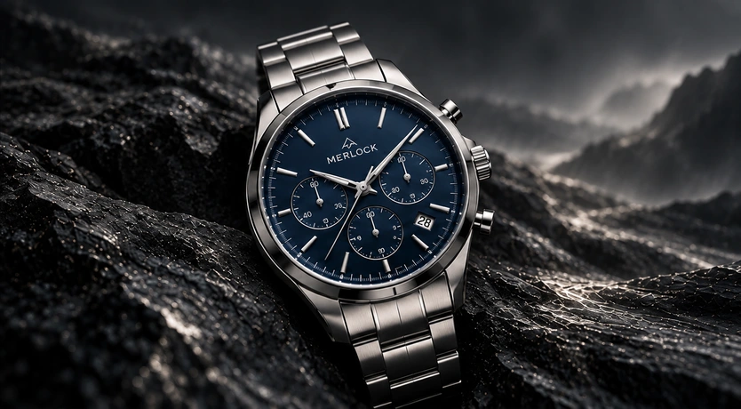

Ayaan Saharia
Co-creator of the Merlock website.
The People Behind Merlock
We are the creators behind Merlock: Ayaan Saharia, Ricky Wong and Alexander MacLeod. Together, we are developing a demo watch store that combines expressive imagery with a clear, considered shopping experience.
Discover the collection →
The people behind the project
Co-creator of the Merlock website.
Co-creator of the Merlock website.
Co-creator of the Merlock website.
What matters to us
We value considered proportions, distinctive dials and an experience that makes browsing feel simple. The collection brings different styles together while giving each watch room to express its own character.
What we are building
Merlock is an independent demonstration project. We use AI-generated watch imagery and illustrative product details to explore website design and retail features. No payments are collected and no physical watches are sold through this demo.